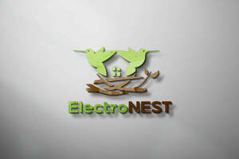

Trade Mark Journal No.2026/011 13 March 2026
UK00004346327 26 February 2026 (9,11,21)

- Class 9
- Electric charging cables; Battery cables; Adapter cables (Electric -); Electric adapter cables; Electric cables; Cables, electric; Electric wires and cables; Electric cables and wires; Battery charging equipment; Cables and wires; Connections for electric cables; Electrical cables; Battery booster cables; Connecting electrical cables; Power cables; Adapter cables for headphones; USB cables; Interface cables [electric]; Materials for electricity mains [wires, cables]; Electricity mains (Materials for -) [wires, cables]; Conduit for electric cables; Connection cables; Sheaths for electric cables; Ducting for electric cables; Charging docks; Cables for earthing; Cable identification markers for electric cables; Modem cables; Electrical cables for use in connections; Ethernet cables; USB cables for cellphones; Jack cables; Microphone cables; Electric extension cables; Wireless battery chargers; Wireless charging pads for smartphones; Network cables; Loudspeaker cables; Phone cases; Mobile phone cases; Cell phone cases; Mobile phone chargers; Chargers for cell phone; Cases for mobile phones; Mobile telephone cases; Phone plugs; Mobile phone covers; Leather cases for mobile phones; Cell phone covers; Mobile phone battery chargers; Mobile phone speakers; Cell phone battery chargers; Protective cases for mobile phones; Mobile phone ring holders; Protective cases for cell phones; Mobile phone straps; Mobile phone screen protectors; Leather cases for cellular phones; Mobile phone ring stands; Waterproof cases for smart phones; Mobile phone connectors for vehicles; Ring holders for cell phones; Holders for cell phones; Ring holders for mobile telephones.
- Class 11
- Electric cooking pots; Cooking pots, electric; Electric pots for cooking; Cooking stoves; Stoves for cooking; Electric cooking pots for household use; Electric cooking pots [for household purposes]; Cooking ovens; Pans (Electric cooking -); Cooking hobs; Cooking grills; Electric cooking utensils; Cooking utensils, electric; Electric utensils for cooking; Cooking stoves for camping; Griddles [electric cooking utensils]; Griddles [cooking appliances]; Electric cooking pots for industrial purposes; Electrical cooking utensils; Cooking appliances; Hot plates for cooking; Grills [cooking appliances]; Electric pressure cooking saucepans; Electric cooking ovens; Dehumidifiers; Air dehumidifiers; De-humidifiers; Electric dehumidifiers; Humidifiers; Dehumidifiers for household use; Air humidifiers; Dehumidifiers for household purposes; Air driers [dryers]; USB-powered humidifiers for household use; Air conditioners; Air heating furnaces; Room heaters; Air dryers; Humidifiers for central heating radiators; Fan heaters; Window-mounted air conditioning units; Bathroom heaters; Air heaters; Air curtains for ventilation; Dryers (Air -); Electric kitchen ovens; Kebab cooking machines; Pizza ovens; Electric bread cookers; Couscous cookers, electric; Crepe cookers; Electric toaster ovens; Tagines, electric; Gas-powered griddles [cooking appliances]; Electric indoor grills; Portable stoves; Cookers incorporating grills; Electric ovens; Microwave ovens for cooking; Domestic cooking ovens; Japanese kitchen furnaces (kamado); Foldable kettles, electric; Electric rice cookers; Kitchen machines (Electric -) for cooking; Baking ovens; Kitchen ranges [ovens]; Electric griddles [cooking appliances]; Industrial cooking ovens; Electric outdoor grills; Ovens (Shaped fittings for -); Shaped fittings for ovens; Hot pots, electric; Rice refrigerators; Ovens; Portable refrigerating boxes [electric]; Electric ramen noodle cookers; Electric cooking stoves; Electric cooking ovens for household use; Sous vide cookers, electric; Electric panini makers; Sous-vide cookers, electric; Microwave ovens; Industrial rice cookers; Domestic bread toasters [electric]; Coffee roasting ovens; Electric appliances for making yoghurt; Microwave ovens [cooking apparatus]; Hot air ovens; Cooling fans; Ceiling fans; Ventilating fans; Room fans; Roof fans; Table fans; Electric cooling fans; Electric bladeless fans; Room air fans; Air conditioning fans; Electric window fans; Radial air fans; USB-powered desktop fans; Fans for hair drying; Motorised fans for air conditioning.
- Class 21
- Household or kitchen containers; Cooking pots; Cooking pots [non-electric]; Cooking pots and pans [non-electric]; Cooking pots for use in microwave ovens; Non-electric rice cooking pots; Cooking pots, non-electric / Non-electric cooking pots; Couscous cooking pots, non-electric; Cooking pans; Cooking pot sets; Pots; Cooking utensils; Cookware [pots and pans]; Griddles [cooking utensils]; Grills [cooking utensils]; Cooking pans [non-electric]; Non-electric cooking pans; Basting spoons [cooking utensils]; Cooking strainers; Simmer rings [cooking utensils]; Shallow pans for cooking; Cooking utensils for barbecue use; Cooking utensils for use with domestic barbecues; Cooking graters; Cooking sieves; Grills in the nature of cooking utensils; Cooking utensils, non-electric; Portable pots and pans for camping; Pressure cooking saucepans, non-electric; Tea pots; Coffee pots; Cooking steamers; Skewers (cooking utensil); Flat cooking ladles; Shaving pots; Baking utensils; Microwave cooking bags; Bags for microwave cooking; Serving pots; Skewers for use in cooking; Cooking skewers; Baking dishes; Roasting dishes; Jars for cooking grease, empty; Mixing spoons [kitchen utensils]; Coffee pots [non-electric]; Flower pots; Plant pots; Skewers [cooking implements]; Hot pots, non-electric; Glass pots; Chamber pots; Utensil jars; Cruet sets; Spatulas [kitchen utensils]; Toilet brush sets; Serving scoops [household or kitchen utensil]; Kitchen utensils; Spatulas for kitchen use; Egg separators [kitchen utensils]; Canister sets; Cutlery trays; Basting spoons, for kitchen use; Rice cookers for use in microwave ovens; Dishes for microwave ovens; Portable cooking kits for outdoor use; Aluminium moulds [kitchen utensils]; Baking dishes made of earthenware; Non-electric cooking pots and pans; Baking dishes made of porcelain; Non-electric griddles [cooking utensils]; Griddles [non-electric cooking utensils]; Tagines, non-electric; Popcorn poppers for use in microwave ovens; Cookware for use in microwave ovens; Picnic baskets (Fitted -), including dishes; Fitted picnic baskets, including dishes; Baking trays made of aluminium; Kitchen moulds; Crushers for kitchen use, non-electric; Tea sets; Tea cups; Tea cosies; Tea balls; Tea bag rests; Coffee filters not of paper being part of non-electric coffee makers; Spice sets; Tea caddies not of precious metal; Coffee cups.
ElectroNEST Limited